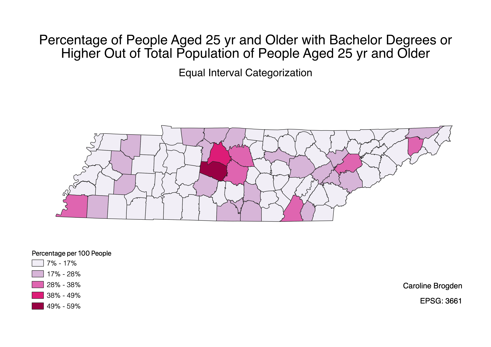
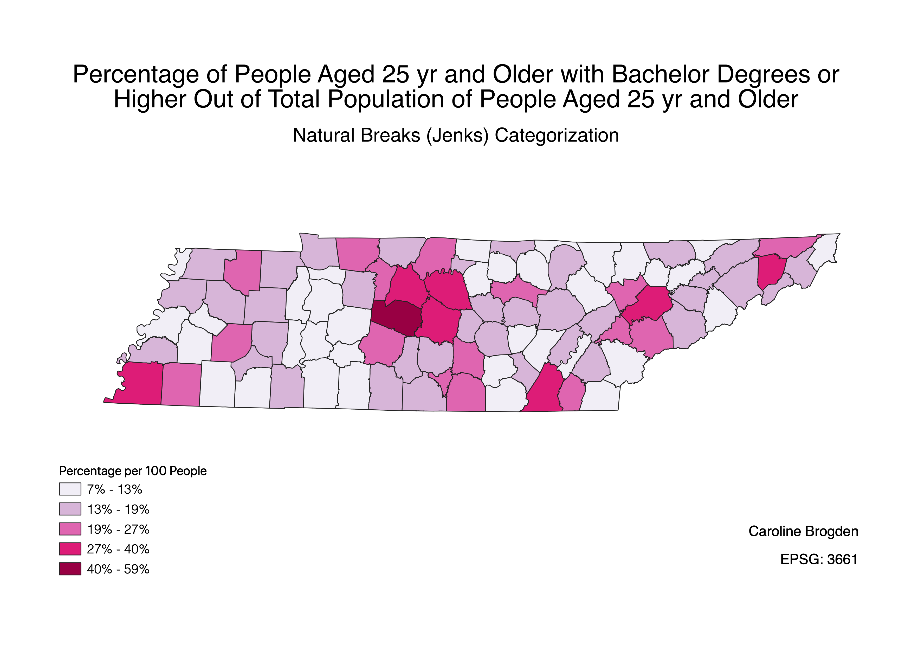
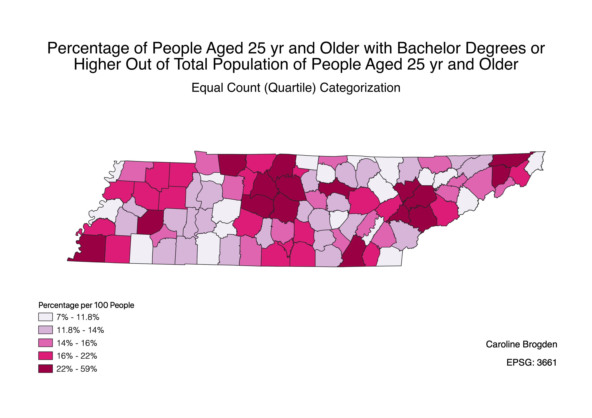

Homework 8: Tennessee Choropleths, 3 Ways
Caroline Brogden
The following maps represent Census data describing the quantity of people aged 25 and older with a bachelor's degree or higher out of the total population of people aged 25 and older in Tennessee in 2018 per 100 people. Because the data provide information about educational attainment across predetermined age categorizations (18-24 years, 25+, etc.) and not out of an estimated total TN population, this normalization describes a percentage of a universe value. A quick Google search pulls up underwhelming statistics about Tennessee's lacking educational achievement ranking nationally; I am interested in educational outcomes in this neighboring southern state.
Map 1

In the equal interval choropleth, each interval is a 10% range. Equal range sizes makes reading the map easier because it presents clear, legible breaks. At the same time, the classification presents a potentially misleading, stark contrast between a handful of counties vs. an overrepresented majority of counties.
Map 2

Natural breaks hint at the distribution of data in a way that Map 1 (equal intervals) may gloss over. More accurate trends emerge from an analysis of this map. A potential downside, however, is that the natural breaks are specific to this ratio, which may make complicate comparing other educational attainment data sets.
Map 3

Quantiles break up the data in a way that tells us, according to this map, that there very few counties where the studied population makes up less than 14% of the total population of that age range; this is good information to have, but this classification could be problematic in policy making, for instance, because the counties with darker shading includes a much more disparate range of educational attainment.
Data used for this project
CSV dataset
Link to Tennessee 2018 Counties shapefile